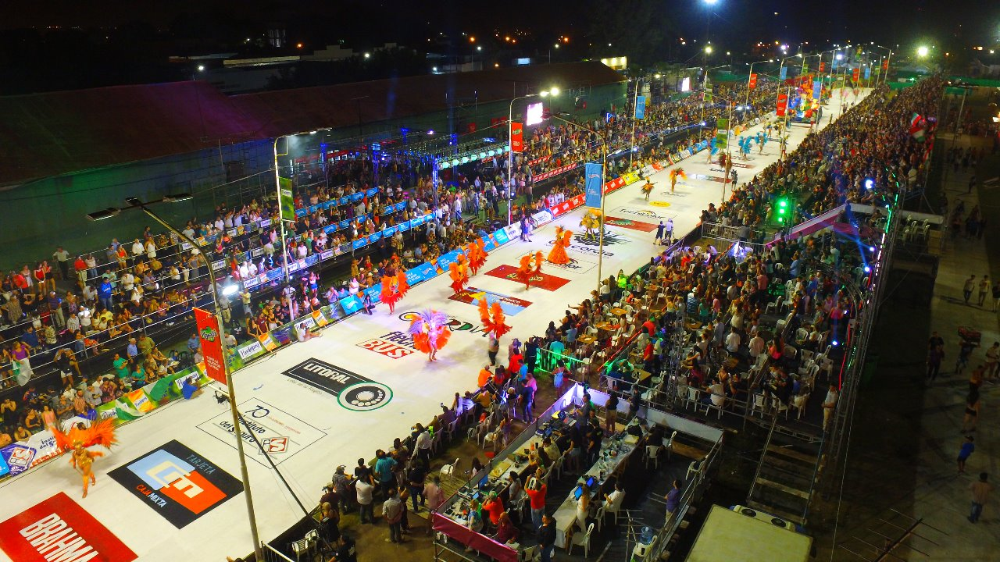
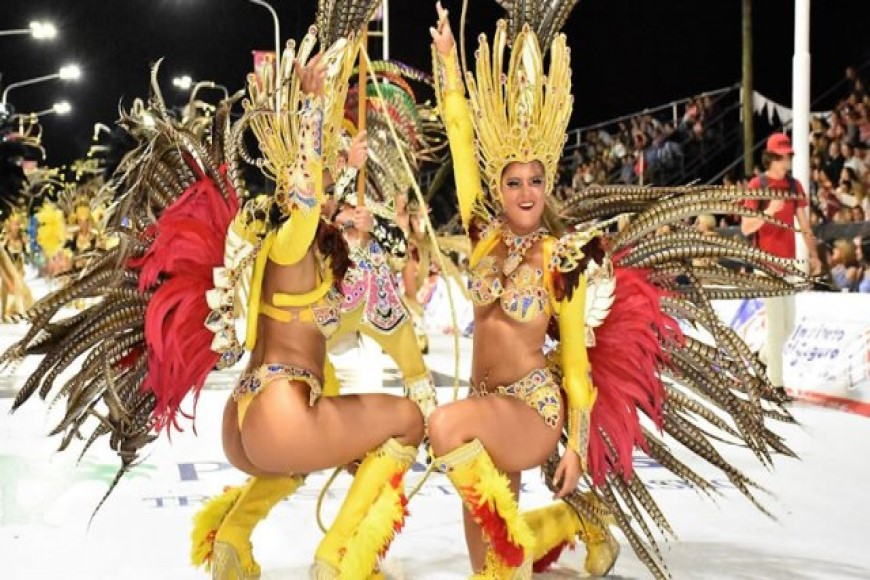
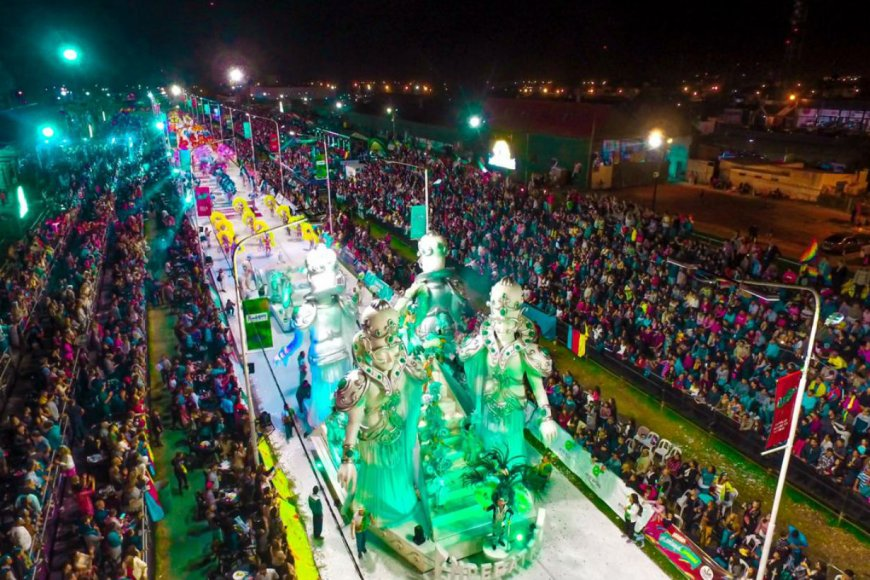

Nuestros carnavales son los mejores del pais


Las comparsas compiten por ser la mejor de todas

Toda la ciudad espera la llegada de las noches de carnaval para disfrutar de la mayor fiesta de las comparsas concordienses en su propio Corsódromo, con capacidad para más de 15.000 personas, con una pista de desfile que permite el cómodo desplazamiento de las agrupaciones que le dan vida a esta fiesta.
Música, color y alegría es el despliegue de las comparsas que compiten. Así aparecen Ráfaga, Emperatriz, Imperio y Bella Samba, cada una con más de 200 integrantes que con todo su brillo, coreografías, el sonido de sus batucadas, permiten que se viva un clima de fiesta que se siente en toda la ciudad y contagia a quienes nos visitan.
Todos los años en febrero, el corsodromo se llena de color y alegria cuando desfilan sus extravagantes comparsas junto a sus carrozas para darnos un show espectacular.
Pero eso no es todo, en toda la ciudad y todo el dia se siente el clima del carnaval y en cada lugar o barrio se celebra con espuma, musica, murgas y baile.
Como en muchas otras provincias, en Concordia tmabien se festeja la fiesta anual del agricultor, donde de diferentes partes del pais vienen agricultores y visitantes a mostrarnos sus costumbre, comidas y tradiciones para celebrarlas junto con nostros para enorgullecernos de nuestra cultura argentina.
La “Fiesta Nacional de la Citricultura” se celebra año a año en la ciudad de Concordia. Expresión de la importancia que alcanzó el sector cítrico, la festividad reúne a artistas, productores, público local y del resto de las provincias. Con apoyo de distintas organizaciones civiles y del estado provincial, además del nacional, la ciudad celebra su historia y su futuro a partir de brindar un abanico de herramientas fundamentales para la prosperidad futura de la industria.
Concordia celebra su abundante cultura, cada septiembre vive un fin de semana lleno de costumbres, sabores y vivencias de cada colectividad que construyó la historia de la ciudad. La Fiesta de los Inmigrantes, evoca las principales tradiciones de las raíces étnicas que formaron la población concordiense.
La fiesta de los estudiantes que marca el comienzo de la primavera celebra tradicionalmente en la ciudad el encuentro de los estudiantes secundarios. El usual desfile de carrozas, la elección de reyes, y la fiesta con artistas, corona el comienzo de la etapa final antes de la graduación. Luego de un año repleto de competencia, los estudiantes se vuelven todos del mismo bando para festejar.